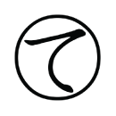

|  |
水槽
haya@TECS／製造業 |
水景を美しく、クリアに見せることにこだわり、理化学器具に用いられるドイツ製特殊耐熱樹脂を熟練した水槽職人が手作業で丁寧に接合しました。まさに水を切り取ったかのように見える水槽です。ポンプ、ライトの電源は本体から端子を通して供給されます。また本体の発する熱によりヒーター要らずです。バックアップ機能を搭載しておりますので、本体にモニターを繋げれば画面上でこれまでの飼育状況を記録することが出来ます。
製品コード：TECS-04 サイズ：W91×D14×H54（mm）
※製品にＦＣ本体、水草は付属しません。 |
|